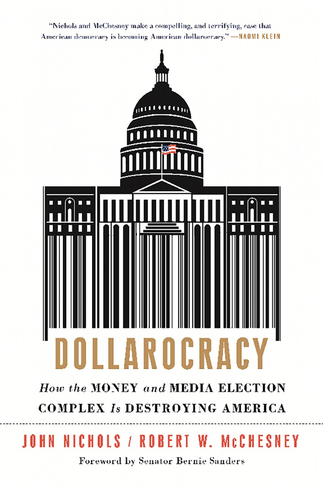
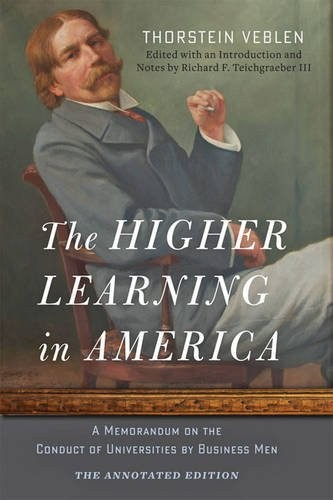

51:39 · 8 OPERE
Thorstein Veblen, il profeta dimenticato.
Il filo del discorso
Dr Divago invita a rileggere Thorstein Veblen come economista e sociologo capace di mettere in discussione la normalità del capitalismo. La teoria della classe agiata introduce consumo vistoso, distinzione sociale e contrasto fra cooperazione e predazione. Il relatore ricostruisce la ricezione italiana attraverso Ferrarotti, Gramsci e la stroncatura di Croce, interpretando la scarsa familiarità del pubblico con Veblen come un problema culturale e politico.
Leggi la sintesi completaRiduci la sintesi
La seconda parte collega il suo pensiero alle università amministrate secondo criteri commerciali, alla posizione delle donne e alla standardizzazione della esperienza. Mills e Dollarocracy ampliano il confronto su concentrazione del potere e capacità organizzativa del denaro. Il filo etico è la distinzione fra funzionamento di un sistema e sua giustizia: essere efficiente non basta a essere buono. Le note mantengono attribuite le accuse di censura e le spiegazioni dei moventi dei finanziatori, distinguendo una biografia accademica complessa dalla prova di un boicottaggio universale. Gli aneddoti sulla previsione del 1929 e su Stalin restano da riscontrare nel passo preciso.
I libri nel discorso

La teoria della classe agiata (The Theory of the Leisure Class)
Note sul riferimento
Copertina di una edizione inglese: Copertina della edizione inglese Penguin Books 1994, ISBN 9780140187953, verificata nel catalogo e nell’immagine. Originale 1899; non copertina della traduzione Einaudi 1949 citata. Per la edizione italiana 2007, Braidense TO01607179 distingue premessa Ferrarotti, introduzione Francesca Lidia Viano e prefazione C. Wright Mills.
Penguin Books 1994, lingua inglese. Non copertina Einaudi 1949; la tiratura usata dal relatore non è identificata.
The Theory of the Leisure Class,1899, e titolo italiano espliciti; copertina inglese 1994 dichiarata.

Quaderni del carcere
Note sul riferimento
Copertina: Einaudi, ET Biblioteca, 18 luglio 2014, ISBN 9788806223441, edizione critica dell’Istituto Gramsci a cura di Valentino Gerratana, in quattro volumi con apparato. Copertina grigio-azzurra con ritratto di Gramsci; la scheda commerciale indica 3480 pagine, mentre alcune descrizioni catalografiche computano separatamente preliminari e testo. Edizione critica originaria 1975; i quaderni furono scritti nel 1929–1935. La variante commerciale Quaderni dal carcere non è registrata come seconda opera.
Copertina intera dell’edizione in quattro volumi, non una fotografia dei manoscritti o dei quattro dorsi. Il riferimento del video è al testo Q15§5, non all’intera edizione letta integralmente dal redattore.
Gramsci, Quaderni e quaderno7 espliciti, passo su Hendrik de Man da localizzare.

Perché non possiamo non dirci «cristiani»
Note sul riferimento
Copertina: Historica, 2022, a cura di Corrado Ocone; ristampa successiva al saggio originale.
Immagine autentica dell’opera, controllata visivamente; l’edizione di riferimento non è attribuita al filmato.
Perché non possiamo non dirci cristiani esplicito, come accostamento interpretativo del relatore alla critica di Croce.
The Power Elite (L’élite del potere)
Note sul riferimento
Copertina di una edizione inglese: Oxford University Press 2000, nuova edizione con postfazione Alan Wolfe, ISBN 9780195133547. Il colophon editoriale distingue prima pubblicazione 1956 e primo paperback Oxford 1959. Il 1959 citato nel filmato per la traduzione italiana Feltrinelli non è attribuito alla copertina inglese 2000.
Edizione Oxford 2000 con postfazione Alan Wolfe. Non copertina della traduzione italiana citata né prima edizione 1956.
C. Wright Mills, The Power Elite,1956, e titolo italiano espliciti.

Divina Commedia
Identificazione probabile
Note sul riferimento
Copertina: Giunti Barbera · Passepartout, 2021 · edizione di riferimento
Dante e Inferno come macchina organizzata: riferimento al poema probabile, titolo non pronunciato.

Dollarocracy. How the Money and Media Election Complex Is Destroying America
Note sul riferimento
Copertina: Paperback2settembre 2014, ISBN 9781568589534,368 pagine nel catalogo Hachette/Bold Type Books, prefazione Bernie Sanders. Prima uscita 2013 nella storia editoriale Nation Books; il catalogo corrente usa il marchio Bold Type Books. Copertina autentica della edizione paperback, non prova della edizione usata nel filmato.
Immagine autentica dell’opera, controllata visivamente; l’edizione di riferimento non è attribuita al filmato.
Dollarocracy esplicito, due autori verificati nei cataloghi Nichols e McChesney.

The Higher Learning in America. A Memorandum on the Conduct of Universities by Business Men
Note sul riferimento
Copertina: The Annotated Edition, Johns Hopkins University Press,1 giugno 2015, cura, introduzione e note Richard F. Teichgraeber III, ISBN 9781421416786. Prima pubblicazione 1918. Copertina autentica della edizione annotata moderna, non prova della edizione letta nel filmato.
Immagine autentica dell’opera, controllata visivamente; l’edizione di riferimento non è attribuita al filmato.
Titolo e memorandum sulle università gestite da businessmen: un solo libro con sottotitolo, non due opere.

La strada di Wigan Pier
Note sul riferimento
Copertina: Alma Classics, 2024 · The Road to Wigan Pier · edizione inglese di riferimento
Orwell e The Road to Wigan Pier riconoscibili nonostante la deformazione della trascrizione automatica.